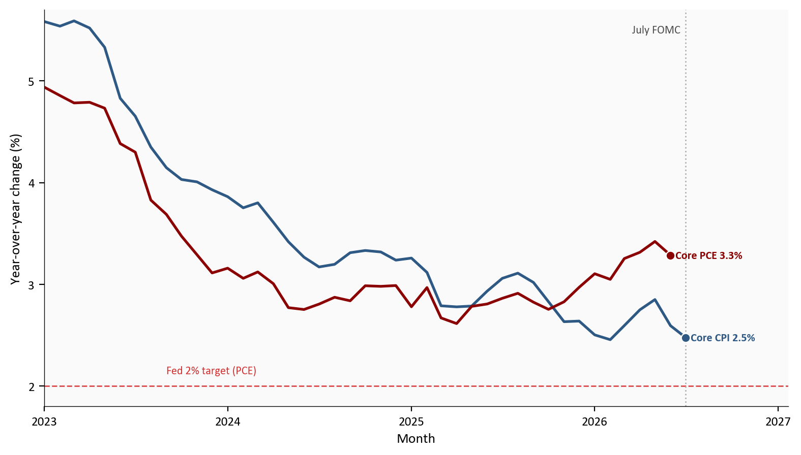
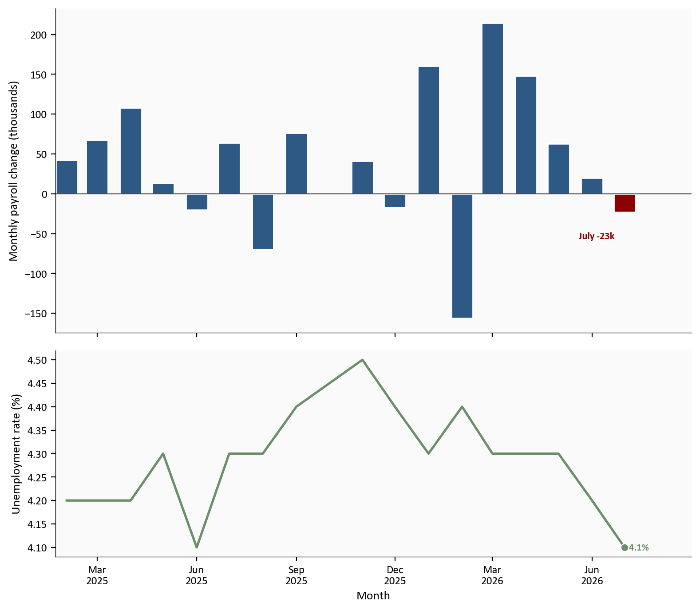
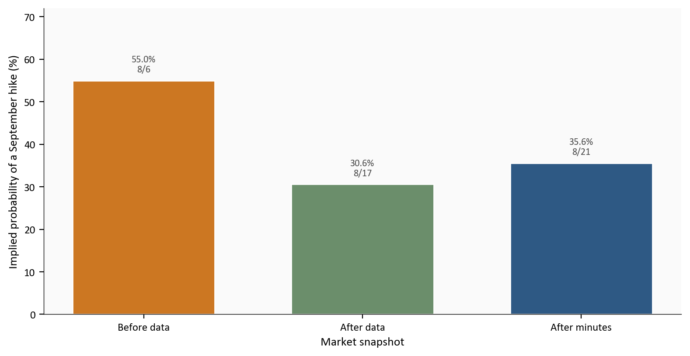
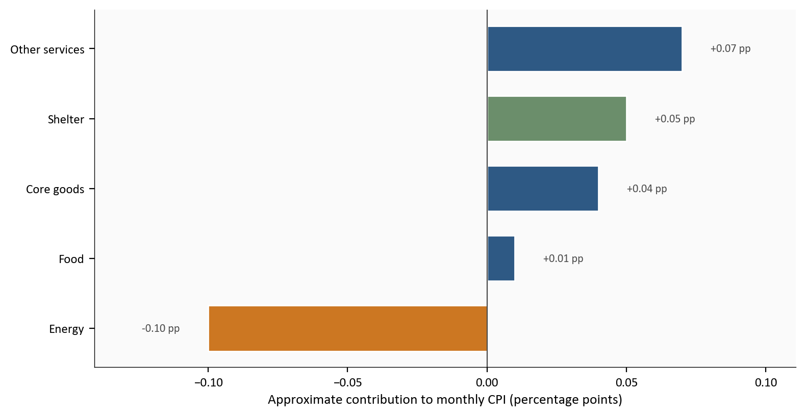
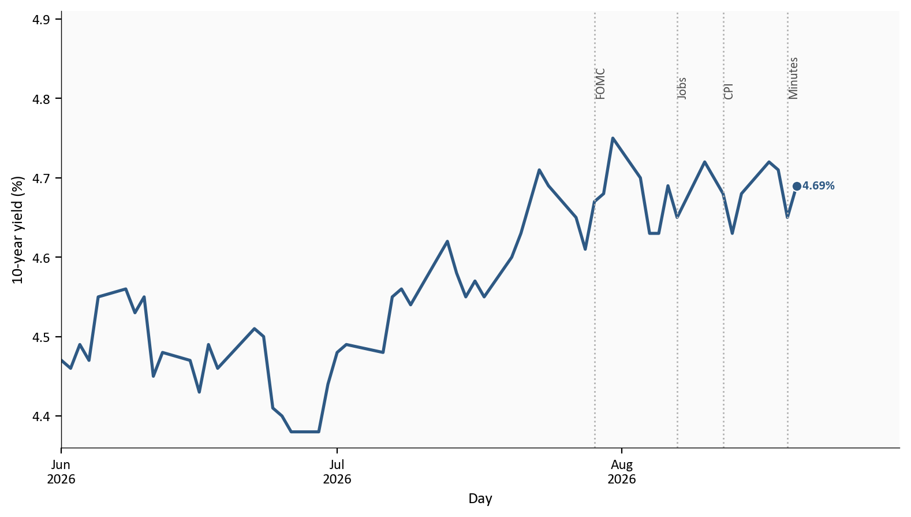

Dissents for a hike
3
9-3 vote; 25 bp preferred
July payrolls
-23k
unemployment 4.1%
July core CPI
2.5% y/y
+0.2% on the month
Sept. hike odds
35.6%
CME FedWatch after the minutes
Minutes released 8/19. Labor and CPI through July 2026.
Yoram Gilboa
August 21, 2026
The Federal Reserve’s 7/28-7/29 meeting minutes, released on 8/19, show a Committee more worried about inflation than the later July data would suggest. Officials held the federal funds rate, the overnight bank rate that is the Fed’s main policy tool, at 3.50% to 3.75%. Three members dissented, preferring a 25 basis-point hike. A basis point is one hundredth of a percentage point.
The key sentence is qualitative: “Many participants assessed that policy tightening would likely be necessary if inflation did not decline.” That record was written from late-July information. After the meeting, payrolls fell 23k, with large downward revisions to May and June. Headline CPI, the Consumer Price Index, rose 0.1% on the month and 3.4% from a year earlier. Core CPI, which excludes food and energy, rose 0.2% and 2.5% year over year. Retail sales and housing starts also weakened. Those prints had opened dual-mandate space for a September hold. The minutes pull some of that space back without closing it.
The complete pipeline is included with this draft:
scripts/01_fetch_data.py downloads validated FRED series for CPI, PCE, payrolls, unemployment, retail sales, housing starts, the federal funds target range, and the 10-year Treasury yield. It also writes curated CME FedWatch snapshots and source URLs.scripts/02_clean_data.py calculates monthly change, year-over-year change, payroll differences, and approximate July CPI contributions. Rate formulas live in this script so the charts only plot finished columns.scripts/04_compute_stats.py writes every prose and metric-card value to stats/summary_stats.json.Run the scripts in numeric order from this post directory, then render index.qmd. pandas handles the transformations, and matplotlib draws every chart. FRED and BLS supply the official series. CME FedWatch probabilities are compiled from contemporaneous reports because CME does not publish a stable historical CSV.
The minutes are a qualitative record. Words such as “many,” “several,” and “some” are the Federal Reserve’s conventional ranking of how widely a view was shared. They are not vote counts. The 9-3 decision is the only numerical vote in the document.
July PCE, the Fed’s preferred inflation gauge, is not published until 8/26. This post therefore uses June core PCE beside July core CPI and flags that lag on the first chart.
CME FedWatch probabilities are implied by 30-day federal funds futures, not a poll of Fed officials. The three snapshots are point-in-time readings from published reports that cite CME, not a continuous official history file.
The July CPI contribution chart uses fixed relative-importance weights. That is a directional approximation, not the official BLS chained contribution method.
Minutes released 8/19. Labor and CPI through July 2026.
The Federal Open Market Committee (FOMC) is the Fed’s rate-setting group: the Board governors, the New York Fed president, and a rotating set of other Reserve Bank presidents. They vote on the federal funds target, publish a statement the same day, and about three weeks later publish the minutes, a summary of the debate rather than a transcript.
The dual mandate is the job Congress gave the Fed: maximum employment and stable prices. Stable prices means inflation around 2 percent over time, measured by the personal consumption expenditures (PCE) price index. Maximum employment is judged from payrolls, unemployment, participation, and wages together, not from one number.
CPI and PCE both track consumer prices. CPI, from the Bureau of Labor Statistics, is the household headline. PCE, from the Bureau of Economic Analysis, is the series the Fed formally targets. Core CPI and core PCE exclude food and energy so gasoline or grocery swings do not dominate. Core CPI is currently cooler than core PCE, which is why both appear below.
A dissent is a formal vote against the decision. Beth M. Hammack, Neel Kashkari, and Lorie K. Logan preferred an immediate quarter-point hike. Chair Kevin Warsh voted with the majority. In Fed drafting, “many” is broader than “several.” The minutes say several participants wanted a hike in July, and many said tightening would likely be needed if inflation did not decline. The hawkish case was wider than the three recorded dissents.
The hinge is timing. The minutes describe late July, when officials still saw stable labor demand and elevated inflation. Jobs arrived on 8/7, CPI on 8/12, retail sales on 8/14, and housing starts on 8/18. The minutes show the July reaction function. They do not, by themselves, lock in a September hike.
The minutes keep returning to one fact: inflation remains above 2 percent. July CPI improved the household numbers without closing that gap. Headline CPI slowed to 3.4% year over year from 3.5% in June. Core CPI slowed to 2.5% from 2.6%.
The Fed’s preferred gauge is still warmer. Core PCE was 3.3% in June 2026, with headline PCE at 3.7%. July PCE is not due until 8/26. At the meeting, staff cited May PCE of 4.1% and core PCE of 3.4%. Several participants called the past year’s price increases broad based. Many warned that a long stretch above 2 percent could begin to affect expectations. A 0.1% monthly CPI print eases that worry. It does not retire it.
# Core CPI (unadjusted year-over-year, matching the BLS release) and core PCE
# (the Fed's target concept). PCE lags CPI by one month in this vintage.
cpi_yoy = inflation["cpi_core_release_yoy"].dropna().loc["2023-01-01":]
pce_yoy = inflation["pce_core_yoy"].dropna().loc["2023-01-01":]
fomc = cpi_yoy.index[-1]
fig, ax = plt.subplots(figsize=(8.0, 4.6))
ax.plot(cpi_yoy.index, cpi_yoy.values, color=COLORS["primary"], linewidth=1.9)
ax.plot(pce_yoy.index, pce_yoy.values, color=COLORS["accent"], linewidth=1.9)
ax.axhline(2.0, color=COLORS["fed_target"], linestyle="--", linewidth=1.0, alpha=0.7)
ax.axvline(fomc, color=COLORS["light"], linestyle=":", linewidth=1.0, zorder=2)
ax.text(
fomc,
5.55,
"July FOMC ",
color=COLORS["neutral"],
fontsize=8,
ha="right",
va="top",
zorder=6,
)
ax.text(
cpi_yoy.index[8],
2.12,
"Fed 2% target (PCE)",
color=COLORS["fed_target"],
fontsize=8,
alpha=0.8,
)
date_span = cpi_yoy.index[-1] - cpi_yoy.index[0]
ax.set_xlim(left=cpi_yoy.index[0], right=cpi_yoy.index[-1] + date_span * 0.16)
ax.set_ylim(1.8, 5.7)
ax.set_ylabel("Year-over-year change (%)")
ax.set_xlabel("Month")
ax.xaxis.set_major_locator(mdates.YearLocator())
ax.xaxis.set_major_formatter(mdates.DateFormatter("%Y"))
ax.yaxis.set_major_locator(ticker.MultipleLocator(1))
ax.yaxis.set_major_formatter(ticker.FormatStrFormatter("%.0f"))
label_endpoints(
ax,
[
{
"x": cpi_yoy.index[-1],
"y": float(cpi_yoy.iloc[-1]),
"text": f"Core CPI {fmt(float(cpi_yoy.iloc[-1]))}%",
"color": COLORS["primary"],
},
{
"x": pce_yoy.index[-1],
"y": float(pce_yoy.iloc[-1]),
"text": f"Core PCE {fmt(float(pce_yoy.iloc[-1]))}%",
"color": COLORS["accent"],
},
],
gap_frac=0.08,
)
plt.tight_layout()
fig.savefig(IMG_DIR / "core-cpi-pce-yoy.png", dpi=150, bbox_inches="tight")
Source: Bureau of Labor Statistics and Bureau of Economic Analysis via FRED (CPILFENS, PCEPILFE). The vertical line marks the July 2026 FOMC month.
What this chart shows in plain English: Both core inflation measures remain above the Fed’s 2 percent goal. CPI has cooled more than PCE, and PCE is one month behind, so the minutes’ inflation worry is not contradicted by the July CPI print. It is only partly eased.
At the July meeting, participants described labor conditions as stable, using data through June. Payroll gains looked consistent with labor-force growth, and unemployment had changed little.
The 8/7 report changed that. Nonfarm payrolls, the BLS count of jobs at businesses and government excluding farm work, fell 23k in July. Unemployment was 4.1%, not a spike. Participation was 61.4%. May was revised from 129k to 63k, and June from 57k to 20k, a combined markdown of 103k. Advance retail sales then fell 0.6%, and housing starts fell 12.4% to 1239k units at an annual rate. The employment side of the mandate is no longer an automatic argument for tighter policy.
# Current-vintage FRED payroll changes (PAYEMS) plus the unemployment rate.
# May and June bars already include BLS revisions; July is the -23k print.
window = labor.loc["2025-02-01":, ["payroll_change_k", "unrate"]].dropna()
july = window.index.max()
bar_colors = [
COLORS["accent"] if stamp == july else COLORS["primary"]
for stamp in window.index
]
fig, axes = plt.subplots(
2, 1, figsize=(8.0, 7.0), sharex=True,
gridspec_kw={"height_ratios": [2.2, 1.4]},
)
ax1, ax2 = axes
ax1.bar(window.index, window["payroll_change_k"], width=20, color=bar_colors, edgecolor="white")
ax1.axhline(0, color=COLORS["neutral"], linewidth=0.8)
ax1.annotate(
f"July {fmt_chg(float(window.loc[july, 'payroll_change_k']), 0)}k",
xy=(july, window.loc[july, "payroll_change_k"]),
xytext=(-8, -16),
textcoords="offset points",
color=COLORS["accent"],
fontsize=8,
fontweight="bold",
ha="right",
va="top",
)
ax1.set_ylabel("Monthly payroll change (thousands)")
span = window.index[-1] - window.index[0]
ax1.set_xlim(window.index[0] - span * 0.02, window.index[-1] + span * 0.12)
ax2.plot(window.index, window["unrate"], color=COLORS["secondary"], linewidth=1.9)
ax2.scatter(
july,
window.loc[july, "unrate"],
s=40,
color=COLORS["secondary"],
edgecolors="white",
linewidth=0.8,
zorder=5,
)
ax2.text(
july,
window.loc[july, "unrate"],
f" {fmt(float(window.loc[july, 'unrate']))}%",
color=COLORS["secondary"],
fontsize=8,
fontweight="bold",
va="center",
)
ax2.set_ylabel("Unemployment rate (%)")
ax2.set_xlabel("Month")
ax2.set_xlim(window.index[0] - span * 0.02, window.index[-1] + span * 0.12)
ax2.xaxis.set_major_locator(mdates.MonthLocator(interval=3))
ax2.xaxis.set_major_formatter(mdates.DateFormatter("%b\n%Y"))
plt.tight_layout()
fig.savefig(IMG_DIR / "payrolls-unemployment.png", dpi=150, bbox_inches="tight")
Source: Bureau of Labor Statistics via FRED (PAYEMS, UNRATE). July is highlighted. May and June bars use the current revised vintage; first-print comparisons are in the prose from the BLS Employment Situation release.
What this chart shows in plain English: Hiring stalled in July without a jump in unemployment. That is a softer labor market, not a recession print. It is also a different labor market from the one described in the July minutes.
CME FedWatch converts 30-day federal funds futures into implied odds for the next meeting. It is a market forecast, not a poll of officials.
On the eve of the jobs report, implied odds of a September hike were about 55.0%, with a 45.0% chance of an unchanged range. After the jobs miss, CPI, and the rest of the soft July run, hike odds fell to about 30.6%. After the minutes they ticked up to 35.6%, with a 64.4% implied hold. Soft data opened dual-mandate space. The minutes kept a hike alive if inflation stops cooling. Traders did not restore a hike as the base case, and they did not ignore the document.
# Three documented snapshots, not a daily CME history file. Heights are the
# implied probability of a 25 bp (or larger) hike at the September 15-16 meeting.
plot = fedwatch.copy()
fig, ax = plt.subplots(figsize=(8.0, 4.2))
bar_colors = [COLORS["warning"], COLORS["secondary"], COLORS["primary"]]
short_labels = ["Before data", "After data", "After minutes"]
bars = ax.bar(short_labels, plot["sept_hike_prob"], color=bar_colors, edgecolor="white", width=0.65)
ax.set_ylabel("Implied probability of a September hike (%)")
ax.set_xlabel("Market snapshot")
ax.set_ylim(0, 72)
for bar, value, as_of in zip(bars, plot["sept_hike_prob"], plot["as_of"]):
ax.text(
bar.get_x() + bar.get_width() / 2,
value + 1.6,
f"{value:.1f}%\n{pd.Timestamp(as_of).month}/{pd.Timestamp(as_of).day}",
ha="center",
va="bottom",
fontsize=8,
color=COLORS["neutral"],
)
plt.tight_layout()
fig.savefig(IMG_DIR / "fedwatch-september.png", dpi=150, bbox_inches="tight")
Source: CME FedWatch probabilities compiled from contemporaneous reports (Barron’s 8/7, MacroMicro 8/17, Investing.com 8/21). See data/raw/sources.json.
What this chart shows in plain English: Traders became much less sure of a September hike after the weak data, then slightly more sure again after reading that many officials still see tightening as likely if inflation does not decline. A hold is still the more likely outcome in this futures snapshot.
A 0.1% monthly CPI increase can hide very different stories. If every category is hot, waiting is harder. If energy is falling while shelter and services are only modestly up, the report is softer without being a full reset.
July looks like the second story. Using fixed December 2025 relative-importance weights, a directional approximation rather than the official BLS chained method, energy subtracted 0.10 percentage points. Shelter added 0.05 points, other services added 0.07, core goods added 0.04, and food added 0.01. Energy CPI fell 1.5% on the month even though it remained 14.4% above a year earlier. Core still rose 0.2%. Officials who said tightening would likely be necessary if inflation did not decline now have some decline, concentrated in energy.
# Fixed-weight approximation using BLS relative-importance shares. Do not read
# these bars as the official chained BLS contribution table.
plot = contrib.set_index("component")["contribution_pp"].round(2).sort_values()
colors = [
COLORS["warning"] if name == "Energy" else
COLORS["secondary"] if name == "Shelter" else
COLORS["accent"] if value < 0 else
COLORS["primary"]
for name, value in plot.items()
]
fig, ax = plt.subplots(figsize=(8.0, 4.2))
bars = ax.barh(plot.index, plot.values, color=colors, edgecolor="white", height=0.65)
ax.axvline(0, color=COLORS["neutral"], linewidth=0.8)
span = plot.max() - plot.min()
padding = max(span * 0.06, 0.01)
for bar, value in zip(bars, plot.values):
x = value + padding if value >= 0 else value - padding
ax.text(
x,
bar.get_y() + bar.get_height() / 2,
f"{value:+.2f} pp",
va="center",
ha="left" if value >= 0 else "right",
fontsize=8,
color=COLORS["neutral"],
)
ax.set_xlabel("Approximate contribution to monthly CPI (percentage points)")
ax.set_xlim(plot.min() - padding * 4, plot.max() + padding * 4)
plt.tight_layout()
fig.savefig(IMG_DIR / "july-cpi-contributions.png", dpi=150, bbox_inches="tight")
Source: Bureau of Labor Statistics CPI via FRED (CPIAUCSL, CPIENGSL, CPIFABSL, CUSR0000SAH1, CUSR0000SACL1E), with fixed December 2025 relative-importance weights. This is a directional approximation.
What this chart shows in plain English: July’s friendly headline was real, but it was not a story in which every household cost fell. Energy helped. Shelter and other services did not.
The 10-year Treasury yield is the rate the U.S. government pays to borrow for 10 years. It feeds into mortgages, corporate borrowing, and bond prices. It is not the federal funds rate, but it moves when investors change their view of the policy path.
It was 4.69% on the eve of the jobs report, 4.68% after CPI, 4.65% on the minutes day, and 4.69% as of 8/20. Those are small moves. If the minutes had been read as a promise to hike in September regardless of the new data, longer yields would more likely have jumped. They did not. Investors still treat September as data-dependent, with the minutes raising the hurdle for a cut.
# Daily constant-maturity 10-year yield with event markers. Rate formulas are
# not applied here; FRED DGS10 is already a yield in percent.
plot = rates.loc["2026-06-01":, "dgs10"].dropna()
events = [
(pd.Timestamp("2026-07-29"), "FOMC"),
(pd.Timestamp("2026-08-07"), "Jobs"),
(pd.Timestamp("2026-08-12"), "CPI"),
(pd.Timestamp("2026-08-19"), "Minutes"),
]
fig, ax = plt.subplots(figsize=(8.0, 4.6))
ax.plot(plot.index, plot.values, color=COLORS["primary"], linewidth=1.9)
ax.set_ylim(float(plot.min()) - 0.02, float(plot.max()) + 0.16)
for stamp, name in events:
ax.axvline(stamp, color=COLORS["light"], linestyle=":", linewidth=1.0, zorder=2)
ax.text(
stamp,
float(plot.max()) + 0.05,
name,
color=COLORS["neutral"],
fontsize=8,
ha="left",
va="bottom",
rotation=90,
)
date_span = plot.index[-1] - plot.index[0]
ax.set_xlim(left=plot.index[0], right=plot.index[-1] + date_span * 0.14)
ax.set_ylabel("10-year yield (%)")
ax.set_xlabel("Day")
ax.xaxis.set_major_locator(mdates.MonthLocator())
ax.xaxis.set_major_formatter(mdates.DateFormatter("%b\n%Y"))
ax.scatter(
plot.index[-1],
plot.iloc[-1],
s=40,
color=COLORS["primary"],
edgecolors="white",
linewidth=0.8,
zorder=5,
)
ax.text(
plot.index[-1],
plot.iloc[-1],
f" {fmt2(float(plot.iloc[-1]))}%",
color=COLORS["primary"],
fontsize=8,
fontweight="bold",
va="center",
)
plt.tight_layout()
fig.savefig(IMG_DIR / "treasury-10y.png", dpi=150, bbox_inches="tight")
Source: U.S. Treasury via FRED (DGS10). Vertical lines mark the 7/29 FOMC, the 8/7 jobs report, the 8/12 CPI release, and the 8/19 minutes.
What this chart shows in plain English: Bond investors heard the minutes and did not treat them as a surprise tightening shock. The bigger yield story in this window is still the soft data, with the minutes as a modest counterweight.
Two clocks are running at once. On the July FOMC clock, inflation was still too high, labor looked stable, and a 9-3 hold with three hike dissents was already a hawkish hold. “Many” participants said policy would likely have to tighten if inflation did not decline. On the August data clock, payrolls fell, revisions erased 103k previously published jobs, CPI cooled, retail sales slipped, and housing starts dropped.
Dual-mandate space is the gap between those clocks. Employment no longer argues for a hike as clearly as it did in July. Prices improved on CPI, especially in energy, but core CPI and core PCE are not at 2 percent. A hold fits the new labor data and a modest CPI deceleration. A hike still fits the minutes if the next prints reverse, or if officials decide that core PCE near 3.3% is too far from target to wait. Markets assign a minority chance to a September hike and a majority chance to a hold. That reading is coherent, and it is fragile.
For the Fed path. The range is still 3.50% to 3.75%. The minutes make an early cut harder to justify and keep a September hike on the table if inflation stalls. They do not tell the Committee to ignore the jobs miss. Neutral implication: a hold is the futures base case, with a hike still the documented risk if prices stop cooling.
For households. Borrowing costs stay high while the funds rate sits here and the 10-year yield is near 4.69%. Cooler monthly CPI helps a little through energy, but shelter is still rising and hiring has weakened. Neutral implication: the inflation squeeze eased, and the job-finding backdrop worsened.
For investors. The minutes reduced the chance that September would be priced as an easy hold-and-cut. They did not restore a hike-heavy path. Neutral implication: two-way risk around 9/15-9/16, with the next CPI and jobs prints still doing more work than one qualitative phrase.
For property and casualty insurers and actuarial readers. A longer hold keeps discount rates for long-duration liabilities higher than in an easing cycle, and it keeps reinvestment rates elevated. Modest 10-year moves around the minutes imply limited immediate bond mark-to-market drama. Claims costs still track shelter and services more closely than the headline 0.1% CPI print. Neutral implication: treat September as hold-leaning with hike risk, not as the start of easing.
The minutes are a summary, not a transcript. Words such as “many” are not vote shares, and the document predates the July jobs, CPI, retail, and housing releases.
Payrolls, CPI, retail sales, and housing starts are revised. FRED payrolls are the current vintage, so the bar chart already includes May and June revisions. First-print comparisons come from the BLS Employment Situation.
The CPI contribution bars use fixed relative-importance weights to show direction, not to match the official BLS chained table. CME FedWatch snapshots are compiled from contemporaneous reports that cite CME futures, not from an official CME history file. The P&C note is a light rate-sensitivity sketch, not a reserving or pricing recommendation.
| Series or source | Use in this post | Source |
|---|---|---|
| CPILFENS, CPIAUCNS, CPIAUCSL, CPILFESL | Headline and core CPI, including the BLS-style year-over-year print | FRED |
| PCEPI, PCEPILFE | Headline and core PCE, the Fed’s target concept | FRED |
| CPIENGSL, CPIFABSL, CUSR0000SAH1, CUSR0000SACL1E | Energy, food, shelter, and core goods CPI for the contribution chart | FRED |
| PAYEMS, UNRATE, CIVPART | Payrolls, unemployment, and participation | FRED |
| RSAFS, HOUST | Retail sales and housing starts | FRED |
| DFEDTARL, DFEDTARU, DGS10 | Policy target range and the 10-year Treasury yield | FRED |
| July FOMC minutes | Vote, dissents, and “many participants” language | Federal Reserve |
| CME FedWatch snapshots | September hike versus hold probabilities at three dates | CME FedWatch |
| July 2026 Employment Situation | First-print payrolls and May/June revisions | BLS |
Python pulls FRED series into data/raw/, computes rates in scripts/02_clean_data.py, and stores every prose number in stats/summary_stats.json. matplotlib draws the five figures. CME FedWatch snapshots and BLS first-print revisions are documented in data/raw/sources.json. Minutes language is quoted from the Federal Reserve HTML record.
Data current as of 8/21/26. Minutes released 8/19. July 2026 CPI and jobs; June 2026 PCE.